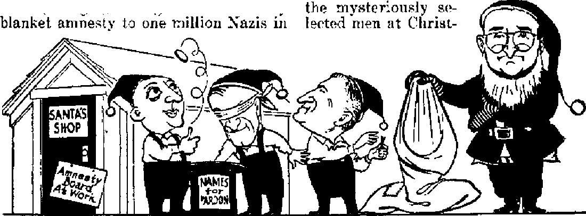

Supreme Court found guilty of discrimination as it sets self up as a religious hierarchy
A stingy Santa to draft-law victims, but a generous and jovial one to Nazis and crooked politicians
The birth of the modern glee club
U Qiam gets a new rule overnight
THE MISSION OF THIS JOURNAL
News sources that are able to keep you awake to the vital issues of our times must be unfettered by censorship aftd ^eJ£sh interests. “Awake I’* has no fetters* It recognizes facts, faces factsr is free to publish facts. It is not bound by poHiical ambitions or obligations * it is unhampered by advertisers whose toes must not be trodden on; it is unprejudiced by traditional creeds. This journal keeps itself free that it may speak freely to you. But it does not abuse its freedom. It maintains integrity to truth,
<,rAwake I” uses the regular news channels, but is not dependent on them. Its own correspondents are on all continents, in scores of nations. From the four comers of the earth their uncensored, on*the* scenes reports come to you through these columns. This journal’s viewpoint is not narrow, but is international. It is read in many nations, in many languages, by persons of all ages* Through its pages many fields of knowledge pass in review—government, commerce* religion, history, geography, science, social conditions, natural wonders—why, its coverage is as broad as the earth and as high as the heavens.
"Awoke!” pledges itself to righteous principles, to exposing hidden foes and subtle dangers, to championing freedom for all, to comforting mourners and strengthening those disheartened by the failures of a delinquent world, reflecting sure hope for the establishment of a righteous New World
Get acquainted with “Awake!” .Keep awake by reading “Awake!”
Published Semimonthly Bt WATCHTOWER BIBLE AND TRACT SOCIETY, INC.
117 Adama Street Brooklyn 1, N. Y., U. S. A.
N. H* PrMteent Ghani Suite a, Secretary
Five cents a copy One dollar a year
RimlttanoM should bs sent to office io your ciw* Chans* of addrm vhen gent to our office may U try io compliance with regulations to guarantee expected effective within one month Send your old safe deliver? of money. Bemlltmces an accepted at a* veil ae new address.
rates in different countries are here stated in local Australia, 7 Beresford ftd., Strathlldd, NSW.
currency, Canada, 40 Irvdn Are., Toronto 5, Ontario
Notice of OKpIntlan (with renewal blank) la sent England, S 4 Craven Terrace, London, W. 2
st leart ivo itn«s jubsaJptJfB expires, South Afrln, 628 Boston House, Cape Town 6a
Entered as seamd-clift matter at Brooklyn, N, Y,, Act of March 3, 1879. Printed la U, 3. A.
CONTENTS
Court Becomes a Religious Hierarchy
Court Makes Dictators of Draft Boards 6
Bible Requirements for Ministers
Amnesty Gift from Santa Claus Truman
“Report of the President’s Amnesty Board” 10
Singing Societies and Glee Clubs
Tillers of the Soil, Take Note!
Armed Coup Strikes at Midnight
The Coup d'Etat, and Its Causes
Provisional Constitution, and Misgivings 19
“Thy Word Is Truth”
How Patrick Was Ifade a Cattolfe
List of Jehovah’s witnesses Pardoned by
the President on December 23, 1947
Volume XXIX
Brooklyn, N. Y., March 8, 1948
Number 5
Pontias Pilate stooped low when he washed his hands of the murder of Jesus, permitting the crime because of religious pressure. The United States Supreme Court stooped low when it recently joined hands with religious pressure to condemn ministers as criminals. It posed as a religious hierarchy to dictate ministerial requirements. Worse, it enforced these rigid requirements upon only one unpopular minority group, excluding favored religions from haring to meet the demands. Guilty of discrimination! Guilty of lending itself as a tool for religious orthodoxy! Guilty of becoming a weapon for wielding against the unorthodox! Free of prejudice, read this account. The facts will force honest minds to agree, The high court has stooped low.
THE Supreme Court has made its low bow of obeisance to orthodox religion.
Its bow may be generally popular, because made at the expense of an unpopular religious minority. But bowing can become a habit. It can become expensive to more and more minorities. It may, in time, cost your minority group its civil liberties. As minority after minority is hammered into the popular mold civil liberties become ever more bruised and battered, turn black-and-blue, and expire if they are not rescued. The earlier the rescue, the easier it is. Hence libertylovers will not view with indifference the following case just because it may concern a group other than their own. In it they will perceive not just an attack on one unpopular minority, but an assault on civil liberties.
Briefly stated, the facts of the cases involved are that three of Jehovah’s witnesses claimed exemption under the Selective Service Act as ministers. The files in the local boards showed that two of them, Wesley Cox and Wilbur Roisum, devoted more than 150 hours each month to preaching the gospel from door to door, in private homes, on the streets and from the public platform. The third witness involved, Theodore Thompson, performed the same services part-time, putting in on an average more than 43 hours monthly preaching. The local board files contained affidavits from others of Jehovah’s witnesses ,declaring they recognized these men as ministers, and statements and ordination certificates from the official headquarters of their religious organization (Watchtower Bible and Tract Society) showing the men were recognized by the organization as ministers and were ordained to represent the organization as such. They served congregations of Witnesses in special capacities, similar to the service of the orthodox clergy within their congregations.
Nevertheless, the local boards ignored the evidence they did not deny or question and capriciously and arbitrarily classified the three men as conscientious objectors and ordered them to drop their ministerial work and report to civilian public service camps. The men reported, to comply with the administrative order, then left the camps in order to test the validity of the draft board orders in court, in an endeavor to gain the exemp-
tion due them under the Act as ministers, In the trial courts they were denied a fair trial. They, were not permitted to prove their claim as ministers to show the invalidity of the draft board orders.
They were actually convicted without trial, theirs being only a farce. The Circuit Court of Appeals approved the trial court’s railroading, action. That court examined the registrants’ files and found the evidence therein ‘‘substantially in support” of the board classifications. What bold prejudice, when there was not a shred of evidence in the file disproving or even questioning the ministerial claims! Thence the ease went to the high court, and on November 24, 1947, came its low stoop in the decision written by Justice Reed, in which Chief Justice Vinson and Justices Jackson and Burton joined, with Justice Frankfurter concurring only in the result. Dissenting were Justices Murphy, Douglas, Black and Rutledge.
The court apparently has been influenced by the government’s policy argument that if the court exempted Jehovah’s witnesses it would sabotage the Act and open the national doors to military defeat. Government conjured up an apparition of terror and a phantasm of catastrophe that would follow recognition of Jehovah’s witnesses as ministers. In near hysteria they emoted, “This is an emergency I Deny their claims 1” Impressed, the court killed-civil rights in the name of emergency. If the court is terrified by the emergency into denying the Act’s exemptions to some ministers, they should undiscriminatingly deny exemptions to all ministers. The emergency cry is only emotional camouflage of prejudice.
The court emphasized the fact that the names of the three Witnesses were not on the certified official list of full-time ministers of Jehovah’s witnesses that was filed with National Headquarters.
Why were these names not on the list? Because the work of keeping this list up to date overtaxed the stenographic force of the section at National Headquarters having to do with this duty and the list was therefore discontinued, and National Headquarters specifically stated that Jehovah’s witnesses had other ministers not on the list and that classification should be determined not by the list but by the facts in each registrant’s file. Moreover, local boards objected to the list as encroaching on their duty of classification. Hence the list was abandoned, and it was no longer kept up to date when these three Witnesses were finally classified and it was impossible to have their names added. It is backhanded and unfair for the court to quibble over this antiquated list.
The court fretted because some ministers of Jehovah’s witnesses do secular work, and on that basis disqualify them as ministers. Such theory is contrary to history, custom, practice, necessity, justice and reason. It is contrary to the Bible. Jesus was a carpenter. Some of the apostles were fishermen. Paul was a tentmaker. Other early Christian ministers were doctors, tax-collectors, and of other professions. The court’s new tenet contradicts Selective Service Headquarters, which held that secular activity does not deprive one of exemption as a minister, saying: “In some churches both practice and necessity require the minister to support himself, either partially or wholly, by secular work.” Enforcing the consequences of this new doctrine of the court exposes how untenable it is. This is ably done in the petition for rehearing filed with the court (but rejected) by the attorney for the defendants, H. C. Covington. Therein he argues:
The fact that a judge of a court may reside on a farm or ranch and/or operate it during his term of office in no. way affects the statutory deferment as long as he fills the
office of a judge. The fact that a governor of a state may own and operate some commercial business in no way weakens his claim for deferment under the Act. That a congressman may maintain a law office and carry on a lucrative practice while serving in the Congress in no way estops him from claiming the deferment granted by the Ae,t; That a wealthy clergyman may devote all of his spare time to the caring of investments in bonds, stocks, real estate and other enterprises in no way deprives him of his right to claim exemption under the Act as long as he is recognized by his organization as a minister of religion and teaches and preaches regularly the doctrines and principles of a recognized religious organization. ... . If the facts established that sueh person comes within the exemption or deferment granted under the Act, incidental activities not entitling him to exemption , . . are wholly irrelevant and immaterial.
It is out into this sea of irrelevapcies that the court has swum till exhausted, and into these murky depths it sinks. But in its desperation to stay afloat it strikes ’ out injuriously, like a dangerous drowning man. The court vilely intimates that defendant Cox was lying when he submitted the evidence that he was a full-time minister, when it said: “No evidence was introduced showing the total amount of time Cox had spent in religious activities since October 16, 1942. Nor was there evidence of the secular activities of Cox nor the time employed in them.” How rotten it is for this court to assume there were secular activities, when the file shows he engaged in none! As for time spent in the ministry, the file showed he averaged 150 hours monthly in that work. The draft board did not dispute that. Neither did the trial court. Neither did the Court of Appeals. Neither did the government attorneys. The Supreme Court is supposed to go on the records that come to them, which records never hinted at impeachment of Cox’s record of hours in the ministry. Yet the court, on no evidence, infers he does secular work and that he has lied on the figure uf hours I It is indecorous, grossly unfair and despicable for the court to make fantastic inferences that fly in the teeth of the record, that read between the lines, that presume guilt instead of innocence, that smear by implication.
The court’s basic error hinges on the restrictive, orthodox view of its members as to what constitutes a minister of religion. Moreover, it is wishy-washy, swayed by every popular whim, turned like a . weathercock in blustery blasts, blown into line with every hysterical cry of “Emergency I” Before this present “emergency” stirred their excitable bosoms the court had - expressly held that Jehovah’s witnesses were missionary evangelists doing ministerial work having as high a claim to protection as the orthodox clergy preaching from church pulpits. Now their view whips into reverse, and they heap rigid requirements on Jehovah’s witnesses, requirements they never dream of forcing upon orthodox churches. Since Jehovah’s witnesses follow in their preaching the methods established by Christ and the apostles, it is clear that' those trail-blazers in Christianity would find no relief by this court from the Sanhedrin views of an arbitrary draft board. Pilate at least discerned religious prejudice on the part of the Sanhedrin that convicted Jesus, found Jesus innocent., and sought to release Him. Religious pressure put a squeeze on Pilate that showed his cowardice, as he washed his hands of the affair and delivered Christ to His murderers. But the Supreme Court blindly joins hands with the Sanhedrin draft board and gives the pressure screws a few more turns.
Congress in the Act exempted both regular and ordained ministers, of all religious organizations. The Act specifies no arbitrary standards that ministers must meet to be recognized. National Headquarters said: “The historic nature of the ministerial function of a registrant’s own religious organization must be taken into consideration in each individual case.” If the organization and its members recognized certain ones as ministers, according to that organization’s own standards, then they are recognized as ministers under the Act; so reasoned National Headquarters. Neither Selective Service Headquarters nor Congress adopted a narrow, orthodox, restricting and limiting definition of the term minister. Congress did not intend narrowness, but wide latitude, to protect the unpopular and unorthodox groups. So why should draft boards and courts fly in the face of the intent of Congress and limit and discriminate? They have exempted many part-time workers and lay brothers of other religious organizations, when those do not even claim ministerial status and do no actual preaching of the gospel. But they reject the claims of Jehovah’s witnesses that spend 150 hours every month preaching publicly the gospel of the Kingdom. That is sheer bigotry, naked intolerance, discrimination in the raw! On this point the rejected petition for rehearing said:
The holding of the court whereby the court implicitly found that the draft boards had rejected the certificates of the Watchtower Bible and Tract Society, Inc.; central legal governing body of Jehovah’s witnesses in the United States, is contrary to the basic principle of non-interference with decisions and rulings of ecclesiastical bodies by the judiciary in the United States. In 1871, this court recognized that findings and decisions of governing bodies of religious organizations were final and conclusive upon the courts. The court held that such findings could not be impeached. . . . The [present] decision of the court, arrogating unto itself the power of deciding the orthodoxy of Jehovah’s witnesses, has converted the court into a religious hierarchy, with the power of deciding religious questions as well as judicial questions.
If the religious organization is recognized as such (as the Watchtower is), and if it is the one to make the requirements for its ministers (as Selective Service Headquarters and common sense hold), then that should be final. The Watchtower Society does recognize these three petitioners in this case, and documents in their files proved it. But the draft boards and courts have meddled into these “decisions and rulings of ecclesiastical bodies” that are supposed to be final. Now to be a minister of the Watchtower one would have to meet the requirements of draft boards and the Supreme Court Religious Hierarchy. This opens the door to squeezing out ministers from any organization that tickles not their fancy.
It was this ignoring of evidence and organization backing that featured Justice Douglas’ dissent, in which Justice Black concurred. He said:
I do not agree that the local boards had adequate basis to deny to petitioners the classification of ministers. My disagreement is required by what I conceive to be the mandate of Congress, that all who preach and teach, their faith and are recognized as ministers within their religious group are entitled to the statutory exemption. . . . The Selective Service files of these petitioners establish, I think, their status as ministers of that sect. Their claims to that status are supported by affidavits of their immediate superiors in the local group and by their national headquarters.
The real issue in these cases is whether the defendants are ministers. In the trial courts they were denied opportunity to have this matter heard and the evidence considered by the jury. Actually, they were denied trial by jury on the basic point. The trial courts held that the draft boards’ classifications could not be questioned. Not so long ago on this point the Supreme Court held: “Since petitioners [Jehovah’s witnesses] were denied the opportunity to show that their local boards exceeded their jurisdiction, a new trial must be had in each case.” (Estep and Smith cases, 327 U.S. 114) But. in this last case, on the same issue, the court has flip-flopped just the opposite, holding that the draft board classification need not be considered in the trial to determine the board’s rightful jurisdiction over the registrant. If he is a minister, the draft board may not force him to report for induction or to any camp, since he is exempt by the Act. But he can’t prove the board’s lack of jurisdiction in court, says the Supreme Court. That court advocates that boards have the right to ignore undisputed evidence in arriving at classifications. Even judges and juries have not this right; but draft boards do, says the court.
The dissent by Justice Murphy, in which Justice Rutledge concurred, struck at this travesty of justice, saying;
Care must be taken to preclude the review of the classification by standards which allow the judge to do little more than give automatic approval to the draft board’s action. Otherwise the right to prove the invalidity of the classification is drained of much of its substance and the trial becomes a mere formality. ... It is needless to add that, from my point of view, the proof in these cases falls far short of justifying the conviction of the petitioners. There is no suggestion in the record that they were other than bona fide ministers.
Let us reduce this doctrine of draftboard dictatorship to the absurdity that it is. If draft board classifications can go uncontested, no person could establish a claim not pleasing to the local board. The whims and caprices of the board would rule supreme, uncontestable. A judge of the Supreme Court could claim exemption-under the Act, but the board could ignore the undisputed evidence and slap him in I-A. And if he did not report for induction he would be tried in court, not on the issue of whether he is a court justice or not, but on the issue of whether he reported for induction in the army and remained there. So they could arbitrarily do to any exempt person they might dislike. They have the power to repeal the deferment the Act gives to members of Congress, members of state legislatures and governors of the states, according to this doctrine of the Supreme Court and the lower courts. Why, if they wanted to they could even exempt all registrants and leave the nation armyless; yet none could question the classifications of the local board.
What folly to contend Congress invested such power in the boards! Congress did not commission draft boards as dictators. But the amazing, staggering, alarming reasoning of the courts is that they are just that. Every other agency is only a rubber-stamp for draft board oracles. Rationalization does not whitewash these things implicit in the myopic, controlling opinion of the orthodox religionists that wrote it. By sophistry and logistical legerdemain the court has futilely sought to rationalize its abdication of the judicial function and has empowered the draft boards to call white black.
Are Jehovah’s witnesses ministers? That is the blunt question at issue here. They are not and do not claim to be Baptist ministers, Methodist ministers, Lutheran ministers, Presbyterian ministers, Pentecostal ministers, Mormon ministers, or priests of Judaism or Catholicism. If they were such they would be bound to meet the requirements of those groups for ministers, and would be treated with deference by draft boards and the ministerial classification quickly granted. But since they are not ministers of those sects they should not have to meet their various requirements. They are ministers of God. Hence they try to meet God’s requirements. Those requirements are not graduation from theological seminaries, peculiar garments, ritual and ceremony and formalism, and to be in the high esteem of the community. Christ Jesus preached the gospel of the Kingdom publicly and from house to house, in homes and on the public
streets; then He taught and ordained His apostles and followers to walk in His footsteps. Prove this for yourself by reading the Bible passages found at Isaiah 61: 1,2; Mark 1:33; Luke 8:1; 13: 26; Matthew 10: 7, 11-14; Acts 5:42; 20:20; 17:17, and Proverbs 1:20,21. Selective Service Headquarters agrees with these requirements and does not seek to pound and shape ministers of all religions into a narrow mold of orthodoxy. Selective Service Director ruled:
One may preach or teach from the pulpit, from the curbstone, in the fields, or at the residential fronts. He may shout his message “from housetops” or write it “upon tablets of stone”. He may give his “sermon on the mount”, heal the eyes of the blind, write upon the sands while a Magdaleno kneels, wash disciples’ feet or die upon the cross. . . . He may walk the streets in daily converse with those about him telling them of those ideals that are the. foundation of his religious conviction, or he'may transmit his message on the written or printed page, but he is none the less the minister of religion if such method has been adopted by him as the effective means of inculcating in the minds and hearts of men the principles of religion.
Because of His testimony to Kingdom truth Christ Jesus was persecuted and finally killed. In those early Christian times His followers were similarly treated, and always it was the religious clergy, the esteemed orthodox clergy, that roused the rabble-mobs and that goaded the political state to help do the dirty work of persecution and violence. Christ Jesus and His early followers were not recognized as ministers of God then, and neither would they be recognized by Christendom today. They were too unorthodox, too unpopular, too small a handful, too uncompromising with the existing, world order of things. Hence Jehovah’s witnesses have difficulty gaining recognition today. They are too much like Christ and the apostles in their preaching message and methods, and too far different from the pious “reverends” of Christendom. In a penetrating editorial commenting on the Supreme Court decision the Toledo (Ohio) Blade of November 26, 1947, dryly observes: “It is not too loose a comparison to say that, under the ruling upheld by the majority of the Supreme Court, Jesus Christ would have been held liable to military service, while the priests of' the temples would have been exempted.”
A few concluding questions: 'Will the court regain its equilibrium and not be swayed by the hysterical cries of oropn-gandists? Will it rest judgment on unimpeached evidence? Will it continue to let others ignore such evidence? Will it escape the narrow confines of its stingy construction of thb term minister? Will it forsake its career as a religious hierarchy setting up ministerial requirements? Will it cease being a tool for orthodoxy? Will it cease discrimination against unpopular religious groups? Will it restore to religious organizations the right to set up the requirements for ministers that represent them? Will it awake to discern that draft boards were not authorized as dictatorships, that their pronouncements are not infallible oracles that may not be questioned? Or will the court sleep and continue to stoop low, or will it straighten up and go right? If it becomes erect and makes the opinion in the dissents the majority opinion, all persons cherishing civil liberties will breathe easier.
The above questions the court can answer if it ever reconsiders this issue. But here is one thing about which there is no question: Jehovah’s witnesses will fight to the final end of this world for their ministerial rights and privileges. They will fight with staunch endurance, and will endure till the end, and in the end they will win. “No weapon that is formed against thee shall prosper; and every tongue that shall rise against thee in judgment thou shalt condemn. This is the heritage of the servants of Jehovah.” —Isaiah 54:17, Am. Stan. Ver.
the American zone, to bring the total Nazis getting amnesty to two million). Instead, he set up an amnesty board to review each ease individually. So at a snail's pace the three members of the
A STINGY Santa Claus with a bap full _r\_ of emptiness. A saturnine Santa, doleful and dcnr. No twinkling eyes, no flowing white beard, no booming jolliness, no generous fatness, no bulging bag of gifts. Why, that’s no Santa Claus! It's a masquerading impostor! Fake beard, fake padding for fat, mere token gifts that are undersized and overdue. And a bag empty not only of generosity but of mercy, and not only of mercy but of justice. Now who on earth would play Sarita with an empty sack! President Truman did. Why? A^khim. ft does not look good to the grandstand. It does not even go over with voters notorious]}' gullible. Yet politicians will pose. Hut you’ll have to ask hirn why. The facts only say he did.
By his own actions President Truman painted himself as a sad sack Santa. Since the end of the war many organizations petitioned Truman to grant amnesty to conscfentions objectors and to ministers wrongfully convicted under the Selective Service Act. On December 23, 1946. he rejected blanket amnesty for these Americans (though granting cn that same day board set out upon this time-consuming policy. The members chosen were Owen J. Roberts, former Supreme Court justice, James F. O’Neil, national commander of the American Legion, and Willis Smith, former president of the American Bar Association. Roberts and O’Neil are rabid supporters of universal military training, which is considered as disqualifying them as impartial judges.
Truman eked out to
WHY NOT FILL YOUR BAG, SANTA!
During February, 1947, this amnesty board held hearings and the majority of the witnesses and organizations testifying favored a prompt and general amnesty. But when “amnesty” came it was neither prompt nor general. Exactly one year after formation of the board it had completed its work and hobbed up with the result—an empty bag. Santa’s little helpers handed the bag to their chief, he took it, and now he holds it. From its folds he searched and finally found the product of a years work by the amnesty board, namely, a token amnesty hi the form of a handful of pardons. These mastime, on December 23, 1947. The newspapers spoke of the miserly dole of pardons as Christmas gifts. But what are the facts that proclaim Truman a stingy Santa with an empty sack? For them go to the
"Report of the President’s
Amnesty Board”
First to mention, the board granted no pardon for a few American Indians on reservations who refused service on the ground of either tribal religions or treaties with the United States that exempted them. Has not the white man scalped the Indians enough, without Santa Claus taking another whack at them? Then there were a few Negroes that so resented service in a Jim Crow army that they preferred prison to. it. They were only holding fast to the Declaration of Independence where it avows “all men are created equal”, to a concept of democracy, of which the army and government often loses sight. But for rank injustice and for babyish smallness, so little that normal persons cannot see it at all, note this finding of the board: “Among the violators, quite a number are now mental cases. We have made no attempt to deal with them, since most of them remain in meiital institutions with little or no chance of recovery.” After the federal institutions have driven them insane surely it would not have strained the government to pardon them.
Also rank and small was the amnesty board’s recommendations and Truman’s action regarding Jehovah’s witnesses. These ministers were denied their rightful exemption as ministers by prejudiced local draft boards. In the courts they were consistently denied a trial wherein they could prove their ministerial status and thereby show their exemption by the Act. They were innocent of crime. Justice would require their pardon, even without any exercise of mercy. The Supreme Court has flopped from one side to the other on this issue, and now straddies the fence as far as an opinion for precedent is concerned. This indecision is in itself grounds for pardon. The board does not consider Jehovah’s witnesses willful violators, saying: “There were 15,805 Selective Service violation cases considered. In this total there were approximately 10,000 willful violators, 4,300 Jehovah’s witnesses, 1,000 religious conscientious objectors and 500 other types.”
The report is lengthy on Jehovah’s witnesses. It admitted great difficulty in coping with them. It slyly observed as interesting the fact that no representations were made to Congress as to the ministerial status of the Witnesses when Congress was considering the Selective Service Act. Did the Catholic cult or the Protestant sects make any representations? Did the board find their failure to do so “interesting”? Then the report spins a yarn. It claims that after the Act became law, then “leaders of the sect asserted that all of its members were ministers”. Certainly ex-Justice Roberts, for one, knows that is a false statement. He heard cases argued before the Supreme Court often enough to know that the Watchtower Society has always recognized its field workers as ministers, and this long before the government’s draft act and before Roberts made public his yen for universal military training. Why smear now?
Owen Roberts, incidentally, insinuated to men not Jehovah’s witnesses, but interested in amnesty, that the Watchtower Society encouraged young men to become Witnesses to evade the draft. He said he heard this. A jurist of rectitude does not go on hearsay evidence. Roberts should not glean his “evidence” from the gossip of Washington’s political sewing circles. He should be able to see the fallacy of the rumor without having a diagram drawn for him. Did anyone escape the draft by becoming one of Jehovah’s witnesses? Did they not land in federal penitentiary instead, Mr. Roberts? and subsequently fall into the merciless hands of the Amnesty Board for clemency recommendations? Criminal draft dodgers would certainly seek an organization more successful in delivering its adherents from the army.
Next the hard, stiff board in its report acknowledges that Selective Service Headquarters “ruled that those who devoted practically their entire time to witnessing should be classified as_ ministers”. Of the 4,300 of Jehovah’s witnesses whose cases the board was reviewing, 958 were full-time preachers of the gospel, and, according to Selective Service, were ministers. Flouting justice and Selective Service as well as mercy, only 129 of these full-time ministers were pardoned. An additional 905 who were not full-time workers held positions as presiding servants over organized companies of Jehovah’s witnesses. Selective Service said justice required that these men be classified as ministers. But the narrow, inflexible board said not even mercy merited them that classification. Selective Service said secular work did not preclude a man from being a minister. But the local draft boards and the amnesty board said it did; hence they would not have recognized the apostles and early Christians as ministers, any more than they do Jehovah’s witnesses today. In all, 136 of the 4,300 of Jehovah’s witnesses were pardoned, or 3 percent. (See page 28 for the list of Jehovah’s witnesses pardoned.) Why this handful, and the others not? Who knows? Certainly not the amnesty board. Apparently they got the names by frittering away a year’s time casting lots, or drawing straws, or flipping coins, or picking names out of a hat. Of the 15,805 eases of all types of violators, only 1,523 were pardoned, or nearly 10 percent.
Instead of playing Santa Claus the president has more nearly played the role of Shylock insisting upon his pound of flesh, even when it is not due him. So inferred Harold L. Ickes, who went on to Say: “President Truman found it easy to pardon members of the Pendergast gang who had been convicted of vote frauds in a Missouri election. And, after all, the theft of votes is a deadlier assault upon American institutions than an aversion to war.” Then, there was Mayor Curley of Poston, a product of machine-politics the same as the Pendergast machine that produced Truman. Curley was convicted of mail fraud relative to war contracts while he was a congressman. But this one who prostitutes his patriotism to capitalize on war is pardoned by Truman after he serves only five months of a sentence of six to eighteen months. If you want Truman to be a nice, fat, jovial, generous Santa Claus to you and pardon you for any crime on the calendar, join the Pendergast henchmen. Or else the Nazis. But don’t' expect him to be one to conscientious Americans. Amnesties have been proclaimed by United States military governments in Germany and Japan.
ither governments, including those of Brazil, Bulgaria, Canada, Chile, Ecuador, Greece, India, Italy, Nicaragua. Paraguay, Poland, U.S.S.R., Union of South Africa, and Yugoslavia, have declared amnesties. But none of this mercy for democratic United States!
The error of tlje board lay in the fact that it retried the cases as previously done in the courts, instead of viewing the matter ^vith mercy, as it should be in the case of pardons. The Washington Post (December 25,1947) struck at this error, saying that there was zealous regard for justice “but there was not much mercy. Indeed, the Roberts board appears to have thought of itself in large measure as a review agency with the function of correcting inequities and extreme stringencies in the application of the draft law, rather than as a dispenser of the forgiveness implicit in its name”.
The Pacifist Fellowship group described the pardons as "a sorry substitute for the real act of justice he might have performed”. The Society of Friends, through their leaders Clarence Pickett and Harold Evans, regretted the omission of Jehovah’s witnesses from those pardoned, saying: “These men take their religion and dictates of their conscience with deep- seriousness. We feel they should have been restored to full citizenship.” Norman Thomas attacked the board’s following a “rigorously narrow definition of religion” and, after noting Roberts’ link witlf universal military training, observed that if that bill went through it would exempt from peacetime conscription “only along the narrow lines on which pardons have been granted”. Certainly these politicians and judges who constitute themselves religious hierarchies will forqe everyone to walk the tightrope of orthodoxy or let them fall into the clutches of the law! Oswald Garrison Villard of the Workers Defense League termed the action “a cruel and vindictive policy”. Dr. Evan W. Thomas, chairman of the War Resisters League, said that “freedom of conscience in America has suffered a severe setback”.
The American Civil Liberties Union joined the swelling ranks of protesters, scoring the refusal of the amnesty board to recommend pardons for “the most numerous single group of men of religious conscience, Jehovah’s witnesses. More than any others they suffered long, imprisonment for that faith”. The'CTtm-tian Century, January 7, 1948, queried bluntly: “Why did the board find it necessary to continue the stupid policy of Selective Service in trying to determine for Jehovah’s witnesses who are ministers and who are not?” Finishing off this hasty feeling of the public pulse on this issue, A. J. Muste, chairman of the Committee for Amnesty, lashed at the action of the board and the president as “devoid of statesmanship, justice, consistency and vision” and as according less generous treatment to conscientious persons in this land than to "former enemies of the nation, members of corrupt political gangs, and mayors of cities who are convicted of violations of federal laws”. He declared that “it is hard to avoid the feeling that vindictiveness on the part of some who have participated in this project has played a part in the result”, and, after scoring the board for invading the religious domain and trying to tell Jehovah’s witnesses which of its members are ministers and which ones are not, he winds up feelingly: “It is a damnable discrimination against one religious sect to continue to deprive all but a handful of Jehovah’s witnesses of their civil rights, iii view of the fact that they are in no sense criminals, in many instances suffered unusually long prison terms.” “It is a cause of shame,” he observes, “that the United States government should grant such a picayune clemency.”
It came as no surprise to Jehovah’s witnesses that Santa Claus Truman came with an, empty bag, A committee of three interviewed him September 6,1946, regarding amnesty for Jehovah’s witnesses. On that occasion his language relative to the Witnesses’ war stand would have made a pirate’s parrot blush. In his public speeches Truman uses God’s name in pious hypocrisy; on this occasion he used it in a different way. Instead of quoting scripture so piously for others, he should read a few for himself, which forbid taking God’s name in vain and the use of filthy speech. (Exodus 20:7; Colossians 3: S; - Ephesians 4: 29) No truer description of the president has ever been given than that of the nationally prominent attorney, Hayden C. Covington, when he told an assembly of 20,000 that Mr. Truman was nothing more than “a political accident that fell into the White House”. And now this “political accident” poses as Santa. Is it any wonder the world no longer believes in Santa Claus ?
MUSIC and entertainment are so closely associated in the minds of most people that the suggestion that music is a medium of expression, and not only of poetic sentiments but also of nations and great revolutionary movements, political and religious, will strike them as both novel and strange. To go further, not only is music a medium of expression, but as such it has the advantage over the spoken and written word in that it is a universal language, one requiring .no translator in order to be understood by other nations.
Music has its rules of grammar and composition even as does the language of a nation, and which must be adhered to if it is to serve as a coherent medium of expression. In general, music may be divided into four categories. In absolute music the composer expresses his love for sheer beauty of sound; in poetic music he expresses the feelings of his heart; in descriptive music he paints a picture or tells a story; and in folk music a people reflects its characteristics more than in any other medium of expression.- The Negro spiritual speaks more eloquently of the sufferings of the Negro than does even Uncle Tom’s Cabin; the music of the Latin peoples, of Spain, France and Italy, reflects their temperament, lighthearted, gay and passionate; Russian music, with its minor strains and heavy themes, reflected their hard life and oppression; and the monotonous Life of the Orient was reflected in the melody and rhythm of their music.
As to music’s serving also as the voice of revolutionary. movements we need only to point to Beethoven, who was a revolutionary at heart, and who hailed Napoleon as a deliverer of the people, only to be so sorely disappointed in him that he composed the funeral march “The Death of a Hero”. Wagner was another outstanding revolutionary who was obliged to flee Germany because of his radical ideas politically, and which he incorporated in his music dramas. Returning to Beethoven, it is said that the chorus in his ninth symphony was first an ode to freedom, but was changed to an ode to joy because of the objections of his patron (who paid his bills). Berlioz was another.
However,-the most striking instance of music as a medium of expression for both a people and a revolutionary movement was the music of Germany associated with the Reformation. German folk music reflects the massive and stolid make-up of that people. It is slower in tempo, often heavier and generally deeper in expression, than that of the Latin peoples. It is rich in harmony, as is all the folk music of the northern and Protestant countries. This is due to the influence of the Protestant Reformation which gave birth to the style of the rich, harmonious ehoral. In fact, the Reformation not only was the great turning point of German history in musical culture and national progress, but in time influenced the whole world. This new^choral and its influence on music afforded the first adequate outlet for the poetic and musical genius of the German people, and such established the “traditional German art” as against the “artistic traditions” of the Latin countries under the influence and monopoly of the Roman Catholic church.
The intellectual force which entered the European arena through the Reformation cannot be overestimated. Thia new Protestant choral style not only became the foundation of a new musical style, but proved to be of the greatest of historical importance. Why? Because the musical system of the Catholic church which preceded it was strictly confined to the priestly office, while the Lutheran chorals were primarily based on the congregational hymn. The one was clerical, the other of the laity; the one was official, prescribed, unalterable; the other, free and spontaneous. Therein lay the secret of the force and spiritual power of the Protestant choral.
A big feature in making the reformation successful was Luther’s revolutionary use of the hymn. The individual, personal nature of the new doctrine not only permitted, but required the employment of the vernacular and the participation of the congregation in church services. To encourage this, Luther very wisely advocated the retention of the most popular hymns of (the Latin church, which he translated into German. Still more, he introduced popular folk songs and spiritual songs, the text of which he and his collaborators changed according to and in harmony with the new doctrine.
This was tlie origin of the Protestant choral, which became the nucleus of the Protestant church music as well as the whole world’s. (Choral music was a potent factor in shaping the course of musical progress.) As time went on, new tunes were added and Luther himself was a contributor! “A Mighty Fortress,” usually ascribed to him, was composed by his friend Walter, These choral tunes sung hy the congregation were, at first, not harmonized. The congregation sang the melody only while a trained choir sang other parts. Martin Luther, who loved music and studied at Mansfeld, Magdeburg and Eisenach, insisted that these melodies (chorals) should be harmonized for the participation of the congregation.
Bupf, a “kapel-meister” (conductor) and Walter, Luther’s musical adviser, accomplished this task. The first collection of chorals compiled and edited by Johann Walter was published in 1524, at Wittenberg, in. five books, which contained songs by Luther, Walter, and others. Note: In- this collection, the melody as customarily with few exceptions was given to the tenor, according to the style present at that time. But, as composers found that they must consider the vocal limitations of the congregational singer, a more simple form of harmony was introduced and the custom arose of putting the melody in the upper voice and the harmony below. That proved so successful that it became at once universally adopted. This was the origin of monophonic music which brought' about a revolution in the history of music; that is, from the polyphonic to the monophonic style. One of the most characteristic features of the chorals, especially those resting on folk melodies, was the irregularity of their metrical construction, the combination of double and triple meter or measure. This peculiarity was, in the course of time, unfortunately sacrificed to the efforts of the organists to extemporize elaborate polyphonic accompaniment. The German choral as now sung is only a “shadow” of its original form.
The choral played a great part in the Reformation. In fact, some authorities doubt if the Reformation would have been so successful without this musical medium of expression. It was indeed a people’s song with a militant ring, a mighty “declaration of independence”. The greatest of all chorals and universally known is "A Mighty Fortress", which Heine (a well-known German poet) called “The Marseillaise” of the Protestant Reformation. Some of the greatest composers, as Mendelssohn, Meyerbeer, Wagner, used it as a “theme” of their greatest works. “A Mighty Fortress” was the inspired battle hymn of the victorious Swedish army during the
Thirty Years’ War. This army stayed eighteen years (1630-1648) in Germany, at which time the soldiers learned many beautiful German folk songs which they brought into their homeland. Some of these songs are still found in Sweden.
Contemporaneous writers of the Reformation period said that the new doctrine of the Reformation was literally “sung into the hearts of the people”. One editor of a German hymn book, published in 1565, said, “I do not doubt that through that song of Luther ‘Nun freuet eueh, liebe christen gemein’ (Dear Christians, Now Rejoice) many hundreds of thousands have been brought to the new faith who otherwise would not have heard of Luther.” A well-known Jesuit declared that “Luther’s songs have damned more' souls than all his books and speeches”.
These chorals formed indeed the cornerstone of the new doctrine, "a natural outburst of a period” of a spiritual and political conflict. A joyful proclamation of a spiritual emancipation; therefore these chorals became “a people’s song”, hence folk songs again reflecting periods of historical events.
We read of stories of how Lutheran missionaries entered the Catholic church during'services and drew away whole congregations by their singing, of wandering evangelists standing at street corners and in market places, singing to excited crowds, then distributing the hymn upon leaflets, so that the populace could join in the singing, and so winning entire cities to the new faith almost in one day.
In this connection it might be mentioned that this idea was practiced as, early as in the fourth century by the “Arians” who, after being banned at the Council of Nicea, in 32.5, resorted to this very idea. They organized choirs, congregated at public places and disseminated their doctrine by singing all night long, especially in Constantinople.
Another .interesting point in connee-tion with the Reformation was the development of the singing societies. It has been said by historians that the Reformation made Germany a “singing nation”. This is true. During the Reformation the new chorals were sung not only in the churches and public places but over the entire country on all occasions. University students sang them* in taverns. This became so popular that they came together for the sole purpose of singing these new chorals. At the University of Leipzig, for instance, a chorus was organized for the purpose of adding interest to the academic functions by means of musical activities. This grew to such an extent that it developed into today’s “singing societies” and “glee clubs”. It spread to every Protestant country, especially into England, where some of the world’s finest singing societies can be found. Through these singing societies, the influence of the Reformation bears its definite mark upon all Protestant countries up to our time.
^Preservation by ‘P^frigeration
Soviet archaeologists have reported finding in southwestern Siberia the bodies of s beautiful girl, a young man and several'horses, together with some food, all frozen solid as if they had just come out of the deep-freeze unit of a modern refrigerator. It was believed that they had lived some 2,000 years ago, yet their flesh was well preserved. The cheese found with their food was in excellent condition and could be eaten. Another story of a similar discovery was recently published in a Norwegian newspaper. It told of a reindeer that had been shot with a stone arrow nearly 4,000 years ago and had only recently been found in a melting glacier near Strasund in Lesja, Norwav.,
Tillers of the Soil, Take Note!
c3£ow Do You Plow? in
LAST summer a monster 60-foot fl disk plow that turns over a strip \ 42 feet wide at the rate of 14 acres A an hour was put into use on a fl
Western wheat ranch. But such an implement V also stirs up a controversy: to turn or not to Z turn the soil, which f Old-timers will tell you A that the primitive people with their crude im- A plements were content to merely loosen the soil, 7 but since our great-granddads invented the iron \ plow with its moldboard only lazy people fail A to tu&n the soil completely upside down. The Department of Agriculture, however, by its re-search has turned up some very interesting facts ft about subsoil plowing. With special plows it is 2 possible to thoroughly loosen the soil beneath A the surface for planting without turning under fl the top soil. Thus a multh of stubble and straw y from previous crops of corn and wheat is left Z on the surface. Such a mulch not only helps to i retain moisture and discourage weed growth, A but also acta as a soil conservation agent, fl
fTSfetv Insecticide A
C There is a continual running battle during fl the growing season between the farmer and the V uncompromising hosts of insects, with the farm- Z er usually on the defensive* Any new weapons, 2) therefore, that are better than his present ones A are always welcomed by the battle-weary farm- fl er* A new chemical known as Thiophos 3422, V which is said to be from five to twenty-five 4 times as potent as famous DDT, depending on J) the insects on which it is used, was tested out A by 75 agricultural experiment stations during fl 1947* So favorable were the reports that some x expect that soon it will be on the market* Z
Naming in A-Bombed Soil v
1 One of the most astonishing results of the fl atom bombing of Japan is a reported 50- to i 300-percent increase over normal yields in the A crops around the city of Nagasaki, where the fl soil still contains radioactive elements, A Japa- y nese agricultural expert named Takeo Furuno Z reported to the Kyodo News Agency that sugar i beets, pumpkins, tomatoes, eggplants and sim- A ilar vegetables showed a 5 0-percent increase, while wheat crops were twice normal yields. Cotton was up to three times the average. If scientists would only use in a beneficial way IhSir ability to split the atom!
^Plants Nevgr Sleep
C In studying plant growth it has been learned that tomato and other plants produce in their leaves, and not in their roots, the sugar neces sary for their growth. This is carried out b} the action of sunlight in the process known as photosynthesis* Such chemical synthesis goes on principally in the morning, and no matter how much sunlight there is in the afternoon the sugar-making business shuts down about 2 p,m. to allow the syrup to be “shipped” to the stems and other parts of the plant. Then about midnight the cell-builders go to work and the size of the plant expands until daybreak* By 6 a,m, the growing Stops and the leaves resume their work of making more sugar. The whole process around the clock is regulated by the infinite wisdom of the great Creator, who himself never slumbers nor sleeps*—Psalm 121: 3,1
5weet Com Stalks
4 Accidentally it was discovered that the in-bred corn known as Connecticut 103 may become a challenger of the age-old sugarrproduc-ing cane, which haa a natural sugar content of 19 to 15 percent. The stalk of this new corn has a sugar content of 11 percent, of which 8.65 percent is natural sugar* Corn syrup, which is well known to many, and which is not a natural sugar but is made by chemically converting corn starch to sugar, is a product of the kernel.
The Cob Finds a Neu> Job
<L The once worthless corncob that even a hog wouldn't eat has now taken on a commercial value* Because of their high absorbent qualities and freedom from acids that attack steel, ground-up corncobs are now being used in tumblers for drying, cleaning and pohshkig precision eteel balls for roller bearings* One manufacturer uses nearly 50,DOD pounds of cobs a year. Who knows, someday farmers may be raising com just for the cobs*
THIS article is written by Awakel’s own correspondent, who has lived in Siam for many j^ears. He was in Bangkok at the time of the publicized coup d’etat of last November. The material for this article he gathered from reliable sources, from persons of all rank, such as Senate members, lawyers, newspaper editors, and from the common people of Siamese, Chinese, Indian and European extraction.
When foreign news agencies informed the world on the morning of November 9, 1947, that a group of army officers under Field Marshal Pibul Songkram had ousted the Thamrong government of Siam and seized control, the opinion of the American and English press was that friends in'power had been supplanted by “Japanese collaborators’’. But not so.
Marshal Pibul was the originator of the coup against the 'monarchy ’in 1932. His chief supporter, on the civil side, was Luang Pradit Manutarm, or Nai Pridi Panomyong, as he is now called. In 1933 there was a counter insurrection, and Marshall Pibul sanctioned the execution of 18 of the ringleaders. The small Siamese governing body never forgave him. In 1942 Pibul, under irresistible pressure, threw in his lot with the Japanese, because the Allies were in no position to render aid to Siam, and his country was incapable of resisting the Japanese. Nai Pridi Panomyong, who had been made regent, aided the Free Thai Movement, started by, the Siamese ambassador in Washington toward the end of the war. Both Marshal Pibul and Nai Pridi knew and approved of the movements of the other. It was the old oriental device of having a foot in both camps.
The political complexion of the two leaders is what, really matters to the democracies. Nai Pridi is a republican. Marshal Pibul, a royalist and a moderate democrat. After the war the party of Nai Pridi, with allied support, waxed powerful and introduced unprecedented corruption into government. All the party leaders -made fortunes. At the same time they were avoiding every obligation to the Allies. For instance, the rice deliveries were hopelessly short. AV hen conditions became intolerable, with two years to go till election time, another coup d’etat was engineered.
The coup was planned by a party of high-ranking army officers, headed by Lieutenant General Pin Chunhavan and Senator Luang Kajsongkram, former chief of staff of the Royal Air Force- On Saturday, November 8, 1947, half an hour before midnight, the uprising smote the Thamrong government and seized power in a bloodless armed coup. The next morning Lieutenant .General Pin Chunhavan requested Field Marshal Pibul Songkram to lead the movement. Marshal Pibul saw in this an excellent opportunity to put himself in right with his countrymen, and he accepted the offer of leadership. When Bangkok roused itself from slumber the next morning it found that the'whole administration of the country was in the hands of the new political regime.
Its strike at midnight had strong follow-through, and the new powers now had occupied the general staff department of the army, the military stores department, the military arsenal, and the ministries of interior, foreign affairs, Justice, Zand and agriculture, commerce and communications, and finance. All of the government buildings are located in a small section of Bangkok, and all roads and bridges leading to these areas had been closed by an iron curtain of tanks and heavily armed soldiers. At night big searchlights pierced 'through the darkness to keep the area free from any danger. Besides this, the harbor, railway stations, general post office and the throne hall were guarded by soldiers armed with Tommy guns and bared bayonets, ready to meet any opposition. But so far there has been no sign of counteraction. It might be astonishing to foreigners that the Siamese, who reach high pitches of excitement in funmaking, take their revolutions very calmly.
The only excitement was at Mai Pridi’s residence. When members of the coup tried to come to a mutual understanding with him Nai Pridi’s bodyguard fired at the approaching military officers of the coup crowd. This while Nai Pridi himself escaped by a back door and thence by boat across the Chow Phya river to the naval headquarters. Later, with the help of Americans and Britishers, he fled to Singapore. Ex-Premier Thanirong was dancing at the Amphorn Garden when he was tipped off about the approaching military mission, and he too fled. But later he was found calmly fishing in Ayudhya. He is free, under no restraint.
On November 22, 1S47, the Standard, No. 77, a weekly newspaper for international readers, published an article on ■'Revolutions and Rebellions”, by Mom Chow Sithiporn Kridakara (meoiber of the royal family). He is now a senior cabinet minister. In the artiele he said:
The causes of the present coup d’etat appear to be many, all enumerated in the recent 18
broadcasts, such as the king’s assassination, high cost of living, graft and all the rest of it. But these are only the symptoms; the real causes were Jack of good faith and again ntin-adherence to democratic principles. It is common knowledge that everybody was heartily sick of the second category members, and the highest hopes were entertained in the Senate, which was supposed to do away with them. I need not recount how these hopes were dashed to the ground. The interests of the party were put above those of the people, who felt that they had been fooled.
Exasperation was the natural result and it was, in fact, the beginning of the end. They viewed the succeeding events with increasing exasperation. But in spite of the growing discontent the M.P.’s cf the. party in power persisted in supporting the government, although they must have known tnat the latter bad lost the confidence of the public. They either fa-bored under the mistaken notion that in party politics their party in power must be supported at a.l cosis, or else they continued their support for private gain. In view of toe barefaced and glaring cases of graft which were rampant, the public naturally thought the latter.
The majority or* M.P.’s, who were either fools or knaves, or both, ignored the democratic principle that they represented the people and must act in accordance with the wishes of the people who voted for them. In other words, they ignored public opinion. It need hardly be said that if the English Conservative 31.P.’s at the beginning of the war had noted hi a similar fashion and, ignoring public opinion, persisted in supporting Chamberlain at all costs, disaster may well have befallen Britain. In our ease an impasse nad been reached; constitutionally nothing could be done until the next general election more than two years hence. It was more than flesh and blood could bear, and I do not believe that even the cool and calm Britishers would have put up with it.
This is not a defense of the coup d’etat, of which I knew nothing, but to deplore that one was necessary to get oat of the impasse into which we bad been led by our so-eailed states-
J TV J V 27 f men, and to make clear the real cause of the coup.
The present position of affairs in Siam is; All things are going ahead normally. For 90 days after the coup military authorities had special powers of search and arrest, to nip early any budding counter movements. The control of the country has been vested in a cabinet of men of the first class, both as to ability and integrity. A Sfinate has been appointed (100 members), and the House of Representatives must be elected within 90 days. This provisional government is headed by Premier Khuang Aphai-wongs; Seni Pramoj, founder of the Free Thai’s, is minister of justice; Phya Sri Visarn Vaja, honored friend of the democracies, is minister of foreigrt affairs, and Prince Rangsit of Chainad is chairman of the supreme counsel of state. A new provisional constitution is promulgated, its important change being an. appointed Senate instead of the former indirectly elected one (filled by the party in power). The newly created supreme counsel of state replaces the former regency, which widens the circle from which the king can draw advice. The Senate members are now to be appointed by the king on the recommendation of the prime minister. Members of thp House of Representatives are elected by the people.
Some of these new arrangements are viewed with misgivings by the people, as were the ■ old ones. •The majority of the people'with whom this Awake! correspondent conversed plainly stated, that they do not like a constitution drawn up mainly by one party in power. They prefer to see it properly done by representatives of the people meeting in a constituent assembly, as practiced in other democratic countries.
The return to power of the former military dictatoi* and wartime prime minister, Pibul Songkram, has brought grave concern to a great number of MAUCH 8, 1948
Siamese and foreigners living in Siam. They-'have not yet forgotten the many hardships brought upon them by his government, which disregarded the rights of free trade and forced many foreign firms to sell their property to the government. But especially the Chinese population, which make up one third of Siam’s 18,000,000 people, view Pibul’s return with trepidation. They remember his earlier career in office, when he sanctioned the close of Chinese schools, reserved all trade for the Siamese, and made hundreds of thousands of Chinese homeless by ordering them to leave certain towns in a minimum of time.
It was under Pibul’s regime also that the highest rights were trodden under, namely, freedom of speech and worship. This despite the fact that the constitution guaranteed that “every person is entirely free to profess any religion or creed and to exercise the form of worship in accordance with his own belief, every person enjoys full liberty of person, abode, property’, speech, writing, printing, publication, education, public meeting, etc.v Particularly in the case of Jehovah’s witnesses did Marshal Pibul overrun these constitutional guarantees. The work of Jehovah’s witnesses was banned, their literature containing Bible treatises confiscated, and three of their missionaries were expelled from the country. Only because of war-crippled travel facilities was the expulsion not carried out, no transportation out of the country being available for them. But soon Pibul’s dictatorship became very unpopular, and in the middle of 1944 he gave way to Khuang Aphaiwongs, who formed a more liberal government and restored the freedoms of the people. Under his regime the ban on Jehovah’s witnesses was lifted, the expulsion of the three missionaries withdrawn, and all their rights were restored.
Later, however, this liberal government was changed, and conditions deteriorated to the abuses that precipitated
the armed coup of November 8, 1947. What the future holds in store for Siam depends somewhat on the new government and the coming elections. But the real future and hope of Siam lies in the same hands that hold the destiny of all nations, the hands of Jehovah’s King Christ Jesus.
-o -----*1“
The Puzzling Homing Pigeon
C A puzzle is a funny thing. The longer one works with it the more determined one is to ft solve it. Sometimes after working long and hard A to get the answer one finds himself right where Y he started. Such a puzzle is the homing pigeon, i which has fascinated the minds of scientists A for generations, ft
C Experiments have shown that many other y birds besides the pigeon have the instinct of Z finding their way back to their homes, Cages A of sooty and noddy terns were taken from their A nests on Tortugas island, off the coast of Fiori- ft da, and were shipped 800 miles below ship \ deck. Upon release they returned to their Z island. Cow birds, which apparently care so ft little about a Home that they place their eggs A in other birds’ nests, were taken from their Z breeding grounds and shipped a thousand miles 2} in three directions, and in less than 30 d^ys all A were back again. Similar experiments with ft sparrows, petrels and pintail ducks show sim- \ ilar characteristics. A
<L Fur a long time it was assumed that mi- $ gration and homing were different^ manifests- v tions of the same instinct Now it is believed ft that they are separate and distinct phen erne-non; for a homing bird returns from a strange A place to its home, but a migrating bird leaves ft its home for a strange land. Homing pigeons Y do not migrate. Z
One answer that was thought to solve the J) puzzle was the theory that homing birds had A an acute vision and sense of responsibility and ft were able to remember all the terrain over which y they traveled and all the turns they made when Z transported away from home. In support of ft such theory the fact was pointed out that the A Signal Corps has been able to train “two-way” ft pigeons to fly not only home but also to re- 1 turn to the point from which they were re- A Leased. Dissolving this theory are the two ex- y perimeiits made by German scientists. Two ' darkened cages of birds were shipped ninety-three miles by train. One of the cages was * placed on a phonograph disc and spun around
5,000 times during the trip. Both cages of birds returned WO percent In the other experiment the birds were chloroformed to unconsciousness and shipped. They too returned without the aid (or hindrance) of remembering every turn in the road.
C. In experiments with the effect radio wave? have on homing pigeons ten birds were used. Five pigeons were released beneath the radio towers of a bigh^power transmitter when the station was turned off. The birds flew directly home, a distance of ten miles, in 20 minutes. The second lot of, pigeons were released when the transmitter was booming forth ful/htast, but they seemed confused and staggered in flight as if unable to get their sense of directing and orient themselves. After making several futile attempts they Anally chose the correct direction and reached home in 42 to 52 minuted instead of 20. Other experiments have been reported where radar beams shot into the midst of wild ducks in flight seemed to break up their formation.
C Nevertheless, the scientists admit that they have not found the answer to the puzzle, and so they continue their search. One of the latest theories advanced is that put forth by Professor Henry L. Yeaglcy, of Pennsylvania State College, as reported by Science News Letter. He suggests that homing birds may be sensitive to geomagnetism and the earth-spin, and that when they live in a certain section of the country for a time they become used to a certain combination of these two forces. If taken to a new location they endeavor to return. Such hypothetical conjectures, however interesting to hear, do not solve the problem. The puzzle remains locked as a secret of the Most High God, Jehovah.
ALL right, so the whale is not a fish, though many people think so. But it is still a whopper of a deep-sea mariner. It is still the most immense of living creatures. Why, some whales are heavier than the total weight of a couple of 40-ton dinosaurs, several 5-ton jumbo elephants and a few 4-ton hefty hippopotamuses put together. So, any way the subject is handled the story of a whale is bound to be a whopper of a tale.
Whales are mammals, we are told, in spite of their tapered fish-like bodies. Instead of having gills, like fish, they have lungs and breathe air, like land animals. Instead of being cold-blooded they have huge hearts that pump warm blood. Instead of having scales they have smooth skin. Instead of laying eggs they give birth to suckling babibs that are nursed like calves. All of which places the whales in a separate and distinct class of their own, called Cetacea^ Technically all creatures of the deep that have these general characteristics are called whales, including dolphins and porpoises. But why get technical? Most of us think of whales as the whoppers of the fish family.
The two main divisions in this family of gigantesques are the toothed (Odon-toceti) and the toothless (Mystacoceti) whales, and you have no difficulty telling which is which when one of these monsters opens his steam-shovel mouth and laughs in your face. The ones with teeth, of which the sperm whales are the best known, have 44 huge teeth weighing as much as four pounds each, located' in the lower jaw only. In the upper jaw are pits or sockets into which these-teeth fit when the mouth is closed. Their toothless cousins, on the other hand, have a peculiar sieve-like curtain that, iji some species, hangs down as much as 15 inches from their upper jaw. This tough, flexible sieve is called whalebone or baleen and is of particular importance in connection with their feeding habits.
One of the outstanding features of all whales is their air intake valve. Instead of having noses that stick out in the way they have blowholes, in what some people think to be the top of their heads. However, the whale’s head is of enormous size, sometimes a third the length of the body, and the sloping part in front of the blowhole is not the forehead but is part of the beak. It is doubtful that whales can smell, but they have an acute sense of hearing when under water. There are no flapping elephant ears on the sides of their heads, but, instead, a few feet back of their eyes there are small holes that lead to internal hearing mechanism.
On each side of the body whales have fore limbs or flippers, but these are used only for steerage and for balancing their huge bulk. Their power-ful propeller is their
tail, and it is divided / f yVL
into two flukes or fins A I
that are horizontal in- rl I flHil
stead of vertical as in the ease of fish. By such an arrangement they are able not only to propel themselves through the water but also to dive quickly and rise to the surface with great speed.
The whale’s diving apparatus is really a wonderment that is little understood by men. Think of it 1 Whales are able to quickly descend thousands of feet to the ocean floor, to depths where the pressure is great enough to crush the steel sides of submarines like tissue paper, and then a few minutes later they come to the surface with absolutely no ill effect from the “bends” which seize men when subjected only to comparatively minor pressures. Such feat is made possible partly by their large supply Of blood, which is greater in proportion to their bulk than in any other mammal. But why they are not crushed to death by the tremendous pressures is a mystery known only to the great Designer and Builder of the whale.
Never forget that you are only human in an attempt to hold your breath like a whale. When breathing rapidly whales come to the surface every five or ten minutes, but ever so often, with a flick of their tail in the air, they sound by diving down to the bottom of the ocean. Some claim that they are able to hold their breath for 15 minutes, but others insist that they can stay down for 45 minutes. Coming up from such depths for a breath of fresh air they.first exhale with the sound not unlike a distant tugboat blowing off steam. In the olden days it was believed that whales spouted off a spray of water from their blowhole, and some naive artists even painted little fish swimming in the spray. However, the white mist is nothing more than condensation of their moisture-laden breath when it strikes the frigid atmosphere of the polar regions.
From stem to stern the whale is plated over with more fat blubber than any other creature. In some of the smaller whales thia padding may be only a few inches thick, but in others, sncfi as the Greenland whale, the blubber armament is from 14 to 20 inches thick. Not only does this afford the finest insulation against the cold in the polar regions, but it is also a protection against the tropical heat when Mr. Whale takes the Mrs. to the equator on a winter cruise. It is also believed that the blubber has something to do with the whale’s ability to sound without being crushed to death.
There are many varieties oi whales each with its particular looks and habits. The humpback whale is not what one would call a good-looking fellow, for he has an enormous fat head, a third the length of his body, that seems all out of proportion. Sometimes huge Coronula barnacles attach themselves to these ocean-going humpbacks and then other barnacles called Otion fasten on to the Coronulas for a free ride. If the Coro-nulas are knocked off the whale’s skin is permanently tattooed with peculiar white markings. Then there is the narwhal, which has a leopard-spotted skin and a spiral-shaped unicorn sticking out in front of its upper lip, looking for all the world like a 9-foot lance with a diameter of 4| inches. The bottle-nosed whale has protruding lips that resemble very much the neck of a milk bottle. The California gray whale that roams the north Pacific is noted for its sagacity and fierceness when attacked. The sperm whale is a natural-born oil tanker, for in his snout he carries nearly 500 gallons of oil and spermaceti. Off the shore of New Zealand there is a pygmy right whale that is only 20 feet long when mature. Why, the newborn baby of the finback whale sometimes is larger than that!
The blue whale not only is the largest living animal, but is also “probably not surpassed in size by any animal living in earlier geological times”. (Encyclopedia Americana) Often they measure over
100 feet in length and weigh a ton per foot. At birth the babies are 20 feet long, grow to 80 feet in a few years, and weigh a hundred tons. One 89-footer was 45 feet in circumference around the shoulders. Another that was only 78 feet long had a head 19 feet in length. The bones of this “small” whale weighed 8 tons; its blood, viscera and baleen totaled 7 tons; its blubber, 8 tons; its skull, 3 tons; and its flesh, 40 tons. What a whopper of a whale! you say. But nay, this one weighed only 63 tons. Some of the real whoppers are nearly twice this size!
The blue whales are also called “sul-phurbottoms” because of the yellowish color on their undersides. However, this is not the natural color of the skin, but is due to a film of diatoms that attach themselves to the whale. Whales also are afflicted by lice that burrow deep into their skin. Just imagine being the size of a lousy whale and not being able to do anything about it!
And what is the cruising speed of these superdreadnoughts? Normally,_ it is said to be 4 knots, but when necessity urges them on they can plow along at triple this speed. Some estimate that these monsters live to be 25 years of age, but others consider their age limited to 8 or 9 years. At the best these are only estimates, since pygmy men have never been able to imprison these monarchs of the deep in artificial aquariums, there to celebrate their birthdays.
Though the blue whales have mouths big enough to take in a dory or an automobile, yet their throats are but a few inches in diameter, no bigger than the size of a man’s arm. This is because the blue whale is-a toothless creature and lives principally on plankton, a mixture of jelly fish, diatoms and red shrimp called “krill”. After skimming from the surface of the sea a mouthful of plankton-the toothless whales squeeze the water out. through their whalebone, sieve, retaining the food on the inside of the baleen. And do not think they go hungry.
As much as 2 tons of plankton has been taken from the stomach of a single blue whale. The sperm whale, having teeth, also has a throat big enough to swallow almost anything his giant jaws can take in, “The sperm whale," says Nature Magazine., “has a tremendous mouth, capable of swallowing seals, sharks or a man . . . it can bite a whaling boat in half." Consequently, Jonah’s improvised submarine could have been a creature like the sperm whale.™Jonah 1:17; Matthew 12:40.
With the whole ocean to roam in it is no easy task to chart the migrating courses of whales or study their breeding habits. Over the years bits of information have been pieced together to show that whales found in abundance in the Arctic and Antarctic during the summer months migrate to the temperate and tropical waters during the winter seasons. They usually travel in herds numbering up to 30 or 40. One time a herd of a thousand was sighted off the coast of Peru. Sometimes young bulls travel together; sometimes a single bull leads a herd of cows; and sometimes old retired bulls that are very ill-tempered keep to their own company.
In the mild climates the mothers bring forth their offspring, and the romantic bulls make love to the cows of their, choice. The naturalist Dr. Roy Chapman Andrews tells how at one time he witnessed a humpback bull whale go through a series of aerobatic gymnastics to show off his physique to the lady friend. He stood on his head and pounded the surface of the water with his tail so violently he could be heard a mile away. Taking a final and majestic plunge he came up to the surface four minutes later with such force he shot 50 feet in the air. Then he and his companion rolled over on their sides on the surface of the water and embraced each other with their flippers. An old salt once de-
scribed a similar maneuver as <fthe prettiest piece ‘Of navigation Pve ever seen’k
The females mate once every tw6 years, and the period of gestation is about ten months. Usually a single calf is born, for twins are a rarity. And what babies they are! At least a third the length of their mothers. Some weigh as much as 15 tons at birth. The mammas have two mammary glands located in a posterior position and when feeding time comes they turn' over on their sides. This way junior can get his milk without having it thinned down with sea water.
Ever since the tenth and eleventh centuries thousands of men have joined in the quest for whale oil—oil for food, oil for soap, oil for paint and industry, oil for glycerin.
No one knows the total number of whales slaughtered down through the centuries. Between the years 1804 and 1817 American whalers killed 193,000 in the southern seas. In the 1840’s the U.S.A-, the world’s greatest whaling nation at that time, had 735 ships and 40,000 men in the business. Then came the explosive harpoon gun in 1867- Later modern whaling methods replaced old techniques and whaling business became Big Business- A few huge mother vessels called factory '‘ships that cost between four and ten million dollars each together with their broods of fast catcher ships, have done away with the hundreds of old wooden craft. Thirty^one of such factory ships capable of “digesting” 40 whales a day killed 64,000 of such in 1939, and in the two decades from 1920 to 1940 nearly 422,000 whales were taken from Antarctic waters. In oil, this amounted to 32,500,000 barrels.
In the olden days baleen was worth $10,000 a ton, and spermaceti from the sperm whale was in great demand for the mailing of candles. But today oil is the big thing, and few sperms are killed, because spermaceti present in the sperm whale's off is not miscible with other whale oils. In the first postwar haul 9 factory ships brought in 60,000 tons of oi], worth from $250 to $360 per ton. The rest of the whale is utilized, also; nothing goes to waste. The whale’s liver is rich in vitamin content; insulin comes from the pancreas; and the skull and bones are ground for cattle food and fertilizer. During the war whale steaks sold for 35 cents a pound. And precious ambergris, that putrid-smelling substance so valued as a fixative in expensive perfume and wliich is spewed up by sick sperm whales, is also diligently sought by pursuers of “Moby Dick”.
Experiments since the war with such things as sonic submarine detectors (ASDIC), radar and electric harpoons are being conducted with the idea, in mind of building up an annuhl whaling business worth $30,000,000. Were it not for the international agreement set up in 1944 between the leading whaling countries, specifying an “open seatim” of three months, man in his greed would, no doubt, soon make extinct practically all species of whales that Jehovah God brought forth.—Genesis 1:21.
<*!-------------------Y?>
^PowLOymen, Beware!
Benzene hexachloride, also known as Gammexane and 600, h the finest insecticide yet found to kill ticks in cows’ ears; but don’t use it on your chickens. Investigation, shows that if a compound containing this chemical is sprayed on the birds themselves or on the walls of their coops, or if it contaminates their food, the chickens become so saturated their flesh will smell and taste of it even after being cooked. Poultrymen are given this warning by Hixson and Dr, Muma in (October 31) because
there are now on the market insecticides containing benzene hexachloride.
New Creatures Anointed
A NOINTING with the active force 1A. known as “the holy spirit" comes from God, and not from religious clergymen -or electronic scientists of -the day. The apostle Paul was anointed with it by God. At Corinth, Greece, the first converts to result from his preaching were doubtless the married Jewish couple, Aquila and Priscilla, with whopi Paul abode. (Acts 18:1-11,18) To the congregation established in Corinth Paul wrote some years later and spoke of the anointing with the holy spirit. He said: “Now he which stablisheth us with you in Christ, and hath anointed us, is God; who hath also sealed us, and given the earnest [or pledge] of the spirit in our hearts.” (2 Corinthians-1: 21, 22) Those Christians there had been guaranteed to Christ as members, of his church, by their being anointed with God’s spirit.
For this reason the apostle further wrote to those Christians, and Christians today can take heed thereto for their instruction: “As the. body is one, and hath many members, and all the members of that one body, being many, are one body: so also is Christ, For toy one spirit are we all baptized into one body, whether we be Jews or Gentiles, whether we be bond or free; and have been all made to drink into [or be saturated by] one spirit. But now are they many members, yet but one body. But now "hath God set the members every one of them in the body, as it hath pleased him. Now ye are the body of Christ, and members in particular."—1 Corinthians 12:12,13, 20,18, 27.
All such Christians* once ordinary humans like the rest of us, had become ‘‘new creatures" in God’s sight by believing the' gospel message and obeying it and dedicating themselves to God through his “one mediator”, Jesus Christ; and thereafter God accepted their dedication of themselves through Christ and begot them to spiritual life by the power of his holy spirit. Only such “new creatures” are anointed with the spirit and designated to live and reign ■ with Christ Jesus in the heavenly kingdom. By being begotten and anointed with God’s spirit, the consecrated one is .baptized as a “new creature” into the “body of Christ”. He thus becomes one of those who are espoused to Jesus as the great Bridegroom. Such baptism of the spirit is common to all, or jointly shared by all, who are members of Christ’s body, regardless of the different offices of service which they fill in the body. Hence theirs is “one baptism”, just as there is one common faith and one common hope of their heavenly calling, and there is one common Head over the whole body, namely, Christ Jesus. For God, who gives the holy spirit, “gave him to be the head over all things to the church, which ig his body.”—Ephesians 4:3-7; 1:22,23.
The । apostle John was one of those present on the day of Pentecost when the holy spirit was poured out from God and through Jesus Christ the Head of the body. Toward the close of the first century, when John was an old man, possibly the last of the apostles to be living, he wrote as follows: “Children! it is the last hour; and as you heard that the antichrist is coming, even now many
have become antichrists; whence we know that it is the last hour. They went out from us, but they were not of us; for if they had been, of us, they would have remained -with us; but it was that they might be made manifest that they are not all of us. And you have an anointing from the Holy One; you all know it [or, you all have knowledge, that is to say, knowledge of the truth]. I have not written to you because you do not know the truth, but because you know it, and because no lie is from the truth. Who is the liar, but he who denies that Jesus is the anointed One? This is the antichrist, he who denies the Father and the Son. . . . I have written these things to you concerning those who deceive you. But the anointing which you received from him abides in you, and you have no need that any one should teach you; but the same anointing teaches you concerning all things, and is true, and is not a lie; and as it taught you, abide in him [Christ Jesus].”—1 John 2:18-27, The Emphatic Diaglott.
The apostle John was, according to the above, writing to an anointed class of persons who must have been, therefore, new creatures in Christ Jesus. The fact that he addresses this grown-up company and addresses some of them as "children” shows that they were children, not physically according to the flesh, but in another respect, namely, as new creatures, being yet very young as such. So then, of whom was that anointed class to whom John wrote 'made up? Merely of elder brethren, those new creatures for some time? Not according to the following words of the apostle, namely: ‘T write unto you, little children, because your sins are forgiven you for his name’s sake. I write unto you, fathers, because ye have known him that is from the beginning. I write unto you, young men, because ye have overcome the wicked ope. I write unto you, little children, ’because ye have known the Father [who has begotten you of his spirit]. I have written unto you, fathers, because ye have known him that is from the beginning. I have written unto you, young men, because ye are strong, and the word of God abideth in you.” (1 John 2:12-14) Writing to all alike, “little children,” "fathers,” and “young men”, concerning the anointing from the Holy One and as abiding in them, the apostle John indicates that the time of their being begotten by the spirit of God to be spiritual sons of God was when they were anointed with the spirit and baptized into the "body of Christ”. By the help of God’s spirit or active force, they must now increase in knowledge' of the truth and in appreciation of their anointing with the spirit. They must increase also in their ability to carry out the things that the anointing commissions them to perform.
If one who has been anointed proves unfaithful and goes out from the. congregation of God’s anointed ones, he becomes an antichrist. His going out does not prove he is right and that those whom he leaves behind him are in the wrong and do not have the truth. The spirit of God, which came with their anointing and which abides in them, illuminates them. It assures them that they have the truth. On the other hand, the unfaithful anointed one is east out of the "body” or Theocratic organization by the Head member, Jesus Christ. The spirit of God does not abide in that unfaithful one and he does not abide in Christ but goes into the darkness of error and untruth. The unfaithful one is therefore an antichrist. The faithful ones from whom he is cut off and disconnected are not antichrists, but abide in Christ. Jesus foretold that in the "last time”, at the end of this world, there would be an “evil servant” class that would be such an antichrist. (Matthew 24:48-51; Luke 12:45-48) Especially since seeing we are at the foretold end ef this world, all anointed new creatures will be careful and watchful against becoming members of the said “evil servant” class.
IT IS generally believed that Patrick became a Catholic, but just how and when is not so well known. History is almost completely silent about his life, and such historians as Gildas and Bede, who lived nearest to the time of Patrick, never mention him. However, Patrick himself wrote out something about his own experiences, calling the comparatively-short record his Confessions. This composition is well authenticated, and another treatise, Patrick’s Letter to Co-roticus, gives us some additional facts about him. The date of Patrick’s birth is now generally agreed to have been A.D. 387.
Reference is made to his Confessions rather freely. He says, in his Letter to Coroticus: “I was born free according to the flesh; I was the son of a father who was a decurio [a Roman magistrate].” Then, in his Confessions: “I had for my father Calphornius, a deacon, the son of Potitus, a presbyter in the Church, who lived in the village of Benavem of Tibernia, near the hamlet of Enon, where I was captured.” This place is located by students as in Armoric Gaul (Western France).
At about the age of sixteen Patrick was captured by bandits, who took him to Ireland and sold him into slavery to Milchu, a Druidic priest. His occupation was keeping cattle, and, like the prodigal son of the parable, Patrick, confessing that he did not truly know God, though raised in a Christian home, now turned to his Creator in frequent prayer. He had much opportunity for meditation, and reflecting on t*he things he had learned at home, he profited much. Meanwhile, his contact with the Druidic inhabitants of the land enabled him to learn of their language, customs and religious practices. After six years Patrick was reunited to his family.
Nothing is known of Patrick’s life for quite a few years after his return. This lack biographers of a later age sought to supply by filling it with incredible tales of his piety and progress in learning. Patrick himself, however, appears to have considered this part of his life as unworthy of special notice. The important event next recorded is that of his return to Ireland p,s a missionary to the pagan Irish. Neither tears nor entreaties deterred him.
Patrick subsequently referred to himself as follows: “An unlearned man, to wit, a bishop constituted [not at Rome but] in Ireland: what I am I have received from God.” In this spirit he carried on the evangelization of Ireland, meeting with much success, despite considerable persecution. Unlike the Romish clergy, Patrick was able to say, after serving the Irish people for thirty years, "If in anyway I have taken aught from you, tell me, and I will restore it to you fourfold.” It is also recounted that converts would cast their precious ornaments at his feet, but he never accepted these, restoring them to their owners. It is not so with the clergy, then or since. After zealously preaching and teaching among the Irish for over thirty years Patrick died near Armagh, on March 17, A.D. 455. It is the anniversary of his death that is celebrated on March 17.
The Irish, however, were not the kind of Christians that appealed to Rome, of which they were largely independent. The conversion of Patrick to Catholicism began more than 500 years after his death. Certain biographers, such as Probus and Jocelyn, started to present him as a wonder-working saint, suitable to the, superstitions of their own dark times, and stated that he had been taught by Germain of Tours and had gone to Rome to receive his appointment as a bishop. But the conversion of Patrick,
and Ireland, to Catholicism was made sure when, A*D. 1167, the pope sent Henry II of England to bring the Irish around to accepting him as the gueces-sor to Peter* After a number of bloody conflicts the Irish were subdued, and Patrick became a "saint" in the Roman calendar. That he was made a Catholic more ihao half a miJJexmium after his death was not Patrick's fault
LIST OF JfeHOvAH'S
Adolph, JrtMS Willard Agalrro, Joseph Alfol, Edward Therfor* 8atl0fll«y* Kenneth Carl Banks, Clyde- Samuel Birbagalfo, Salvator* Domhfo Hoyd Nebo a
Baxter, tester Etfjerc Betz, M»rl« Don Bible, Reginald Alien Bladak, Dai Id T, Blelch, Fred Charles Blotch, Levhiir Boiwfl, Jamis Qtls Bowman, Davlq Franklin Bronzm-kli. Frank, Jr. fir ode ir, keen Edward Brown, David Wallace firown, Irrla Walter fiirdnw. Merle Robert Bumphrey, Fl Ay ri fl»1an CahoM* Ralph Henry, Jr,
Carras. ftftn drict Carter, David Earl Clark, Willram Cochran. John Francis Coll HU. Boyri William Cook* Roy Lea Douala* Cornelius, Kenneth Eric Counts, WlulUld Andrew Covert, Georae Lyfo, Jr. Bruch. Am&lfo Cyr, Eldon Lto
WITNESSES PARDONED
Davie*, John William, Jr navi*, Clyde Alfred Dean, Bernal, Jr, Deane, Loren Ray t-hrman, Raymsnd John Ensley, Barton Arthur Errichetti, Eduard Anthanj Fedora, TJj^We Fedorka, Walter FUcher, Robirt Allen Foltan&k, Frank Ferdinand Freemen, Mork Lee Glanepoilos, James Gott. James Livingston Grlvnow, John Hamilton, Milton Robert) jtampscHi, WijJlAflj Jamu Heatwole, Jams Henry. Jtene Albert Hilburn, Howard M, Hinkle, Dwfohl David Holsinger, Koport Reinhart Hoaser, Donald Max
Marta FJmee Hill, FCoyd Eugene Jackson, Mclyin Lewis James, Jimmy Dzan } James, Norman Alfred Jinsen, Ollu Anrin Jensen, Svend Aage Karlovich, lr,hn Kat rows k I, John Kelley, Neil Webster Kelly* Henry ffougias
BY THE PRESIDENT ON DECEMBER 23, 1947
Kers, Allan Lloyd Korn, Willard Raymond Klehw, Gten Alien Kraishaar, Lawrence Frederick Krhfalauf, Charles, Jr. Krii«, Clarence Willard KuLick, John Myron Labis, J»W3h Lahr, John Gilbert Lamborn, Robert Carl Lampert, Arthur John Left, Ralph Beniamin Maurer, Dale Calvi* Mayket, Frank John Medill, Deri wniard Meng! Charles Joseph Meredith, Rleharj lean Miscar folio, Aldo Future Myiton, John Edward Ncgria, Nick Nelson, Paul Floyd Morris, Edwin E., Jr. D'BIcriess, Gonloi Eugene
Wctor
Olson, Ve-rron Glenn Phillips, Leah Louis Fl Liman,' Wij il$ Allen Potter, Duiglas Blakely Powell, Roland Feter Price, Harrey Harding Pirckttt, Joseph Oscar Py$hT Waller Thomas .Pytlak, Joseph Martin
Rlrko, Alexander
Samson* Carl Theodore Sthmardifcck, Thomas M. Sth mi nt* Stanley Eugene Self, Glenn Richard Sfierwood, Paii Robert Siderls, Nicholas Charlas Slmp&on, Kirkland Roland Slavey, law Vicjpr SlasU, Meftln Edward Steel?, ChsrlH Arthur Stephen*, Carroll Palmer S'epheHs, Robert Winston Siege, Daniel Julius Sirege, Galveston Carl Stud, Donal* Ed me nd Sydlik, Daniel Taylor, Rittoll Arden THIqiht, Edward' Brook* Timmons, Harald Lee Turner, HAyts Volker, Thomas Elwood VoLkoff, Alexis Wallace, Jack Faile WsJj, Lewis FrPilfjJrJc Watts, Hamid I hum ton Wayne, Thomas John W»folT Frank White, Frank Arthur Wiest, Donald Glen Wifoank, Elmer B, Witty. Floyd Jos ph Wilkes, Bovgrly "I! ar th Williams, Harty Rodney Wyatt, C«eil Arden
From the pages of the open Bible flows truth which brings comfort and happiness and leads to life.
An edition of the popular King James or Authorized Version Bible is published by the WATCHTOWER* Besides the unaltered text, this edition contains marginal references, maps, a concordance and other helps which will assist in making the Bible an open book to you. It is bound in unattractive maroon color. Sent prepaid on a contribution of $L(JO. Use the handy coupon below*
O--------<>
WATCHTOWER 111 Adams St- Brooklyn 1, N* Y.
Enclosed find $1.00. Please send me a copy ot the Watchtower edition of the Kw Jtmes Version nitite.
Name....................... -................... —......... Street ..........................
ERP Progress
The European Recovery Program, continuing its slow and tortuous way through the labyrinthine processes of the United States Congress, appeared to be getting somewhere in early February. Its various features had been subjected to dose scrutiny by politically suspicious and wary congressmen. The pipeline feature, as It is called, implies a constant flow of goods to Europe, chiefly from the United States. Interim aid for France, Italy and Austria approved in late December was being used up rapidly, and more would be necessary, according to Secretary Marshall, if by April 1 long-term plans had not been approved.
The Senate Foreign Relations Committee, considering the administration of the Recovery Program, on February 10 unanimously approved an independent head, who would have cabinet rank, differences between the ERP administrator and the secretary of state to be submitted to the president for decision. The plan also provides' for a bipartisan advisory hoard to assist the administrator.
The Foreign Relations Committee on February IB voted unanimously for an initial appropriation and a four-year authorization. It was proposed to make the initial appropriation $o, 3(30,000,-000 for twelve months. It was also voted to make aid to any nation dependent on the co-operation of that nation in the overall plan, nations turning to Communism to be excluded. The sixteen participating nations are to be bound to specific pledges and production goals.
Senator Taft, commenting on the ERP provisions, said, “We want peace and prosperity throughout the world, to eliminate a threat to our oyvu freedom, but it Is certainly not wTorth while to adopt a foreign policy so burdensome on our people that it will destroy at homo the very freedom we are trying to protect.” Governor Dewey of New York, a presidential aspirant like Senator Taft, urged that aid to Europa be used to speed the establishment of a federation of free European nations.
Army for Palestine
The big question that agitated the U. N. in mid-February was what to do about Palestine, which needs armed forces to keep the Jews and Arabs front murdering each other on a large scale. Examples of this disposition on the part of these mutually hostile elements in Palestine have been furnished with enthusiasm by both sides ever since, some months ago- the U.K, General Assembly voted to divide the territory between them, sending a commission to Palestine to decide how this was to be done. The commission in early February prepared a twenty-page report for the consideration of the Security Council and ft strongly urged the recruiting of an army to enforce partition. But the question of supplying soldiers Is a difficult one, neither the U. S. nor Britain being anxious to have Russians sent into the territory as part of an international force. Palestine appears to belong to everybody and nobody. However, the final disposition of the Holy Land, so long desecrated by Jew and Gentile, will be determined by Jehovah.
Report on Korea
<£> The U. N. Temporary Commission for Korea informed the Interim Committee of the General Assembly (Little Assembly) on February 6 that it had been unable to exercise the functions conferred on It, due to the Impasse between the Soviet and American occupation powers. The U. S. occupies the agricultural South, and the Russians control the industrial North, with Its coal and iron mines. Russia wants a pro-Communlst setup in Korea, and the U. S. favors a democratic government The U. S. pushed the establishment of the commission to supervise elections in both zones. The Russians would not admit the commission, however. A significant wave of strikes, sabotage and violence swept the American zone about the time the commission made its report. The rioters demanded that both the American occupation forces and the U. N. Commission get out of Korea, There was no disturbance In the Soviet zone.
World Economic Survey
<$> The U. N. Department of Economic Affairs reported on February 4 that food shortages were still the worlds No. 1 economic problem, and the cause of the inflation spiral. It urged emergency measures be taken to halt worldwide inflation. A report submitted to the Economic and Social Council stated that 1947 production of key foods was 70 percent below that of 1037, although the output of seme foods was back to practically ■ prewar level. Explanation for the continuation of the shortages In almost every country of the world was that the population of the worl^ has increased 10 percent since the outbreak of the war, requiring high* er production ; the U. 8. accounts almost entirely for the comparatively high agricultural and industrial production, European production being worse affected than any other region.
IX N, Journalist Code
An international group of journalists, meeting at Lake Success, New York, on February 2 adopted a compromise proposal In which were set forth the rights and practices and obllga* dons of the press. It called on the press to ^counteract the persistent spreading of false and distorted reports which provoke hatred and prejudice against states, persons Or groups of different race, language, religion or philosophic conviction^. The memorandum was approved by the tL N. sub commissi on on freedom of the press and is to be considered by the world-wide conference ob freedom of information at Geneva in March.
The Queen and the Indies
Queen Wilhelmina of the Netherlands on February 3 broadcast a message (In English) to the United States and Britain, declaring that “colonialism is dead’* and stating she was happy that the people of Indonesia were on the verge of forming a federal state. She said that both Indonesians and Dutch must fight terrorism and anarchy, took* tag forward to the day when the United States of Indonesia would take its place among the United Nations.
Ceylon Independence
In early February Ceylon attained dominion status within the British Commonwealth of Nations. The British reserve the right to guard its communications and protect it from external aggression/because ot its strategic position in the Indian Oceati. Ceylon is an important source of pearls, sapphires and other gems, as well as of tea, rubber, copra and spices.
Civil Rights Program
■$> The White House on February 2 sent to the U. 8. Congress, a special message recommending extensions of civil rights laws and endorsing most of the reforms advocated last October by the Civil Bight* Committee. The message affirmed the American position that all men are created equal, with the right to equal justice and freedoms, equal chances for work, health, homes and education. Government, said the message, should “protect, not usurp” these rights. The ten points of the Civil Rights Program were the following:
1. Sei up a Civil Rights Division In the Justice Department, a Permanent Presidential Commission on Civil Hights and a House-Senate body with similar functions-
2, Strengthen existing statutes to assure equal treatment to all residents, whether citizens or not
3. Provide Federal protection against lynching, ,
4. Abolish poll taxes and furnish more adequate protection In “the right to vote”.
5. Establish a permanent Fair Employment Practices Commission to prevent “unfair disci'imi' naflonX Xu
6. Prohibit discrimination In t nter st ate tr an sporta t ion f ac 111-tles,
7. Provide home-rule and the. vote for residents of the District of Columbia,
8. Grant statehood to Hawaii and Alaska and greater self-government for Puerto Rico and the Virgin Islands,
9i Strike out racial restrictions barring some Orientals from obtaining citizenship,
10, Settle promptly the claims of Japanese-ATnertraTL^
from their wartime evacuation from the West Coast.
Price Reductions
& fti&re concern was shown in Washington over the early February drop in prices of foods than had been displayed over the steadily mounting prices of preceding months. Four big grocery chains had announced price cuts on flour, lard, bacon, shortening and beef. The average market price of twelve key foods dropped nearly 12 percent. Wheat dropped 1G percent, but the corresponding the vnc£ of bread was only a cent a loaf; while a reduction of 21 percent in the price of corn was reflected in a three-Cent reduction in the cost of pork chops per pound. Prices on butter and sugar also were lowered. Commodities other than foods dropped about 3 percent. As prices continued to drop during the first half of the month the Council of Economic Advisers scheduled conferences with industrial leaders, labor and farmers, as well as consumers, to determine the cause of the continuing slump in the market. Decline in stocks was the worst since May of last year.
U. S- Tax Bill and Budget
<$> The House of Representatives on February 2 passed the Republican tax reduction bill by a vote of 297-120, providing for an aggregate tax reduction of $6,500,-000,000. Personal exemption# were to be raised by $100, while married couples are to be permitted to split incomes for tax return purposes. All Individual income levies are lo be tut xV'&vi 10 to 30 percent. It was expected that the bill would be considerably modified by the Senate.
The Joint Congressional Committee on the Legislative Budget on February 6 adopted ft report based on the president’s budget, giving Its approval to expenditure estimates for the 1949 fiscal year In the amount of $37,200,000,-000, anticipating receipts of $47,-300,000,000 and a surplus of 100,000,000. Republicans pointed out that this would allow for the tax cut* and also provide for retirement of part of the national debt of $257,000,000,000.
Winter Floods
The advent of milder weather in early February, after a period of real winter with copious snows, resulted in floods in eight Eastern and Southern states. More than 5,000 persons were made homeless, and the death toll reached 15 by the middle of the month, A cold wave which was expected to halt the melting of the snows failed to materialise, as residents in the Ohio-Mississippi valley watched the steadily rising waters,
"Temple of Good Will”
Meeting at Grand Rapids on February 14, the International Council of Religious Education took official action toward establishing Impressive headquarters in a proposed national Protestant center at Columbus, Ohio, The council appointed a special committee to confer with other national interdenominational church groups on the subject. The proposed headquarters for S* Protestantism are to be housed in a skyscraper 4‘Temple of Good Will” with full convention facilities, in the heart of Columbus,
U. S* G. I. Bill Signed
The president on February 14 signed the bill which increased benefits of veterans attending schools (effective April 1), at an estimated cost to the American people of $217,000,000 annually.
Aid to U. S. Colleges
Au extensive program of federal aid to American colleges and universities to permit doubling of present enrollment was recommended in a report by the 28-member Presidents Commission on Higher Education made public February 1, Appropriations of from $450,000,000 to begin with and increasing to $850,000,000 in 1900 were recommended. Exclusion of private colleges was stipulated in the report. To this restriction the two Roman Catholic members on the commission objected, The majority of 26 insisted that any school accepting public funds should also accept vhe right of the people as a whole to exercise review and control of the educational policies and procedures of that Institution1,
IL S.-ItaliBn Pact
Italiap Foreign Minister Count Carlo Sforza and U. 8, Ambassador J. C. Dunn on February 2 signed a treaty of friendship, commerce and navigation on behalf of their respective countries, tw thft HaU of Victory X^alazzo Chigi at Rome, ratifications of the pact to be made at an early date. The treaty will continue in effect for ten years, and from year to year thereafter, unless denounced by either signer* It is the first treaty of its kind signed by the U, S. since the war,
"Battle of the Documents’'
The publication by the U. S* government of Germ an-Soviet documents revealing the relations between the Nazis and the Soviets in 1939-1941 began February 9 to be answered by Russia, The Soviet published long statements op Hitler’s relations with the Western powers, charging that U. S, dollars built up Hitler’s war Industry; that Britain gnd France, by appeasing Hitler, hatched the second world war, and that Britain and France tried to get Hitler to attack Russia. The truth of these assertions by the Soviet Information Bureau was quickly denied, but Britain’s government indicated that they tod not think the publication of the German-Soviet documents by the U. 8. was a good thing to begin with,
German Government
The British and American zKmes of occupation In Western Germany, linked together, on February 6 were given a German Economic Administration, This setup takes the forth of a two-house legislature, elected by the provincial governments in the eight states comprising the two zones; also an executive cabinet elected by the legislature. The American and British occupation authoritfeg win review the actions of these bodies reserving the power to veto any measure that Is not acceptable. The Rua-slang countered by setting up a one-house legislature of picked representatives In their Bone of occupation. The legislative body includes three members from the Soviet-sponsored trade union federation and two from farmer organizations, Id addition to representatives of the five states in
Soviet is accusing Britain and the U, S. of "splitting Germany”,
Election in Ireland
February 4 was election day in Ei^e (Southern Ireland), Spiraling prices, low wages and need for land reforms were the chief issues* Eamon de Valera’s party, the Fl anna Fall, lost its majority in the Irish parliament In the elections,
Zhebrak and Soviet Science
<$* News coming by way of Paris In early February revealed that Anton R* Zhebrak, distinguished Soviet biologist, had been removed from hia post as president of the White Russ lap Academy of Sciences, He made the mistake of ’'preaching here((yH, by saying there was no difference between Soviet and Western science.
More and Bigger Atom Bombs
The Atomic Energy Commission on February 2 disclosed in a report to Congress that a vast research program, focused on ^urgent objective^, Is bringing forth new designs in atomic weapons and production Is carried 'forward on a different and much greater scale than heretofore.
Largest Sugar Mill in the World
Construction of the largest cane sugar mill built was completed at the town of tar I os A. Carillo, in Vera Cruz, Mexico, in early February, The mill will be able to handle 5,000 tons of cane a day, producing about 500 tons of raw sugar. The plant waa built by the Farrell-Bl rm Ingham Co,, Inc., of Ansonia, Connecticut
HOUSEHOLDER: “Maybe some other time. I’m interested in the Bible, but I am really too busy now."
WITNESS: “But can you be sure tha| you will be here some other time, or even tomorrow? Your future may depend upon today’s deci" sions. Besides, The Watchtower will actually save you time in Bible study.”
HOUSEHOLDER: “I hadn’t looked at it just that way before. But how can The Watchtower help me to learn about the Bible any quicker?’1
WITNESS: “The Watchtower is especially arranged for Bible study. It compares today's events with those foretold by the prophets, giving a rapid insight into prophecy. Furthermore, when a subject is being ■studied, many scriptures dealing with that subject are brought together, As a result, not only is understanding hastened, but it is in harmony with the entire Bible. Most busy, people do not have the time to personally make such thorough research, but knowledge is no less vital to them,”
HOUSEHOLDER: “Can I get The Watchtower now?”
WITNESS: “Yes, and by subscribing now you may obtain a free packet of eight booklets. The cost is only $1.00 for a year’s subscription of 2£ copies.”
It is not necessary to wait for a witness to call. Readers may subscribe for The Watchtower by sending $1.00 with the coupon.
WATCHTOWER 117 Adams St. Brooklyn 1, N. Y.
Enclosed find $1*00 for a one-year subscription tdr The Watchtower and the gift premium of eight hook-let^ (Effective until April 30, 1948)
Name...........................-...........-........-.....................~.........s.....—......—------ Street...............................„......
City ..................._.............................. Zone No. _______ State
32
AWAKE!